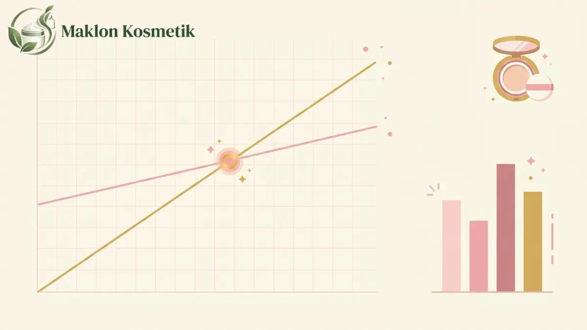

Cushion telah bertransformasi dari sekadar tren kecantikan Korea menjadi produk kosmetik harian wajib bagi konsumen di Indonesia. Bentuknya yang praktis membuat permintaan produk ini terus melambung tinggi.
Banyak calon pebisnis kecantikan mengira memulai brand cushion membutuhkan ratusan juta rupiah. Persepsi ini muncul karena teknologi wadah compact dan spons berpori terlihat rumit.
Faktanya, lewat skema maklon modern dengan kuantitas pesanan minimum rendah, Anda bisa memulai produksi perdana cushion dengan modal awal sebesar Rp 20 juta.
1. Peluang Pasar Cushion & Realita Modal Rp 20 Juta
Pasar base makeup di Indonesia mengalami pergeseran signifikan dari foundation cair berat menuju cushion yang ringan dan mudah diaplikasikan ulang saat bepergian.
Modal Rp 20 juta terbukti realistis jika Anda mengambil kuantitas 300 unit dengan sistem formula siap pakai (stock formula) yang telah mengantongi izin BPOM pabrik.
Langkah efisiensi ini memangkas biaya riset formula laboratorium yang mahal. Dengan begitu, sisa modal dapat difokuskan pada kegiatan pemasaran dan akuisisi pelanggan baru.
2. Rincian Alokasi Modal Kerja Awal
Mengelola modal Rp 20 juta menuntut disiplin anggaran yang sangat ketat. Jangan sampai seluruh modal terserap habis hanya untuk memproduksi produk fisik.
Berikut adalah simulasi alokasi dana yang proporsional antara biaya produksi, legalitas perizinan, pengemasan, dan anggaran promosi di kanal digital:
| Pos Anggaran | Rincian Komponen | Estimasi Biaya | Porsi (%) |
|---|---|---|---|
| Produksi Fisik Produk | 300 unit cushion @ Rp 45.000 (wadah, puff, cairan, box) | Rp 13.500.000 | 67,5% |
| Legalitas & Notifikasi BPOM | Pendaftaran notifikasi merek di BPOM via skema pabrik | Rp 2.500.000 | 12,5% |
| Desain & Pembuatan Sampel | Desain stiker etiket, dus luar, dan 2 kali revisi tester | Rp 1.500.000 | 7,5% |
| Anggaran Pemasaran Awal | Iklan media sosial berbayar dan seeding produk ke micro-creator | Rp 2.500.000 | 12,5% |
| Total Anggaran Awal | Rp 20.000.000 | 100% | |
3. Struktur Biaya per Unit dan Margin Penjualan
Menetapkan harga jual eceran tidak boleh hanya berpatokan pada biaya pabrik saja. Anda harus memperhitungkan potongan biaya transaksi marketplace dan ongkos kemas paket.
Jika harga jual eceran (retail price) ditetapkan sebesar Rp 119.000 per unit, berikut adalah kalkulasi arus kas bersih yang diterima per transaksi:
- Harga Jual Konsumen: Rp 119.000
- Biaya Administrasi Marketplace (10%): -Rp 11.900
- Alokasi Biaya Iklan per Order (15%): -Rp 17.850
- Biaya Pengemasan (Kardus & Bubble Wrap): -Rp 3.000
- Penerimaan Bersih per Unit: Rp 86.250
Dengan HPP pabrik Rp 45.000 per unit, margin kontribusi kotor yang dihasilkan mencapai Rp 41.250 per unit (sekitar 34,6% dari harga jual konsumen).
4. Analisis Titik Impas (Break-Even Point)
Titik impas atau Break-Even Point (BEP) adalah indikator krusial untuk mengetahui berapa unit cushion yang wajib terjual agar seluruh modal Rp 20 juta kembali utuh.
Perhitungannya didasarkan pada total pengeluaran dibagi penerimaan bersih per unit: Rp 20.000.000 / Rp 86.250 = 232 unit.
Artinya, Anda perlu menjual 232 unit dari total 300 unit batch pertama (sekitar 77,3% stok). Penjualan unit ke-233 hingga ke-300 merupakan keuntungan bersih bisnis Anda.

5. Tabel Skenario Penjualan: Dari Pesimis ke Optimis
Dalam praktik bisnis sesungguhnya, kecepatan penjualan produk kosmetik sangat dipengaruhi oleh daya tarik konten promosi dan kecocokan warna di kulit target audiens.
Tabel skenario berikut memperlihatkan proyeksi hasil keuangan berdasarkan persentase tingkat keberhasilan penjualan stok cushion:
| Skenario Penjualan | Unit Laku | Penerimaan Bersih | Total Biaya Awal | Laba / Rugi Bersih |
|---|---|---|---|---|
| Pesimis (60% Terjual) | 180 unit | Rp 15.525.000 | Rp 20.000.000 | -Rp 4.475.000 (Rugi Modal) |
| Moderat (70% Terjual) | 210 unit | Rp 18.112.500 | Rp 20.000.000 | -Rp 1.887.500 (Mendekati BEP) |
| Realistis (80% Terjual) | 240 unit | Rp 20.700.000 | Rp 20.000.000 | +Rp 700.000 (Laba Awal) |
| Optimis (100% Habis) | 300 unit | Rp 25.875.000 | Rp 20.000.000 | +Rp 5.875.000 (ROI 29,3%) |
6. Empat Risiko Finansial yang Wajib Diwaspadai
Menjalankan bisnis kecantikan dengan modal ramping membutuhkan kehati-hatian ekstra. Kesalahan kecil dalam pengelolaan dana tunai bisa menghentikan operasional brand Anda.
Kenali empat jebakan finansial yang sering menjerat para founder kosmetik pemula sebelum meluncurkan produk perdana:
- Biaya Iklan Berbayar Membengkak: Melakukan uji coba iklan digital tanpa target audiens yang jelas dapat menghabiskan anggaran promosi dalam hitungan hari.
- Perang Diskon Tak Terkendali: Memberikan potongan harga terlalu besar di live streaming dapat menggerus margin tipis yang telah diperhitungkan.
- Risiko Retur Barang Pecah: Cermin atau engsel cushion rentan pecah dalam ekspedisi jika kemasan luar tidak dilindungi bubble wrap tebal.
- Salah Memilih Rentang Shade: Memproduksi warna yang terlalu gelap atau terlalu terang menyebabkan perputaran stok menjadi sangat lambat.
7. Strategi Memaksimalkan Profit untuk Pemula
Kunci keberhasilan bisnis cushion dengan modal Rp 20 juta terletak pada efisiensi rantai pasok dan kecepatan konversi penjualan tanpa bergantung sepenuhnya pada iklan berbayar.
Mulailah dengan meluncurkan satu atau dua warna netral (seperti medium beige) yang cocok untuk mayoritas kulit sawo matang dan kuning langsat wanita Indonesia.
Gunakan wadah kemasan ready stock yang disediakan pabrik daripada memesan cetakan khusus berbiaya tinggi. Ini menghemat jutaan rupiah biaya pembukaan cetakan awal.
Buka masa pemesanan awal (pre-order) dua minggu sebelum produk selesai dirakit. Arus kas muka dari konsumen dapat langsung digunakan untuk memperkuat modal pemasaran.